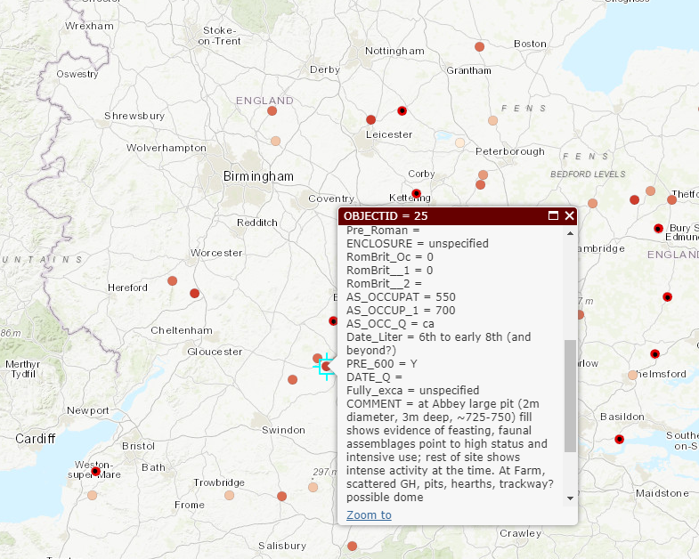

02: Anatomy of DH Projects
Matt Price
Today
Why “Anatomy of DH”?
DH pipelines
Tools & Technologies

Technology in DH
Choosing a Tool
Affordances
Users, Readers, Communities
Technology-in-practice (Wanda Orlikowski)
The notion of “technology-in-practice“ suggests that the technology is not just the machinery, digital or analog, but on the one hand the organizational or institutional culture around it, and on the other hand, the needs and practices of its user community. Organizational culture and user community create a “behavioural and interpretive template” for the use of a technology.
Technology-in-practice: not only the technology itself, but “the ways it is extended, adapted, used, and misused by a specific user community—whether by ignoring an entire set of functions, or by extending its functionality through plugins or customizations, or by using it for purposes never foreseen by its designers. More briefly, technology-in-practice is “what people actually do with the technological artifact in their recurrent, situated practices.“
Technology-in-practice (DH)
DH: technology-in-practice is software and data as used by scholarly communities of practice, within institutional and disciplinary concerns and constraints, in conversation with audiences.
Technology-in-practice

Users and Intended Audiences
[E]ven doorknobs have politics in that they may be round, requiring a human hand to turn them, or shaped as levers, such that a person with a prosthetic limb or an armload of groceries with one free elbow can still successfully use them. This is more than simply a matter of utility. Both designs are political in that they presume and construct different kinds of worlds, with the round doorknob presuming a world in which everyone’s bodies are the same, and in which hands with opposable thumbs and sufficient grip strength are always available
What groups of users/readers are invited in? What groups of users/readers are shut out?
Consider:
User Experience, Interfaces, & Display
Data
Uses of Humanities Data
Classifying Hum Data


But then, Thinking Hard about Data
Humanities Data: Posner
It would be possible to enumerate all of the filmic conventions that recall the conventions of melodrama. Is there a villain? Is there a heroine? Are good and evil depicted in stark, black-and-white terms? You could even build a dataset like this and use it to show how film changed over time.
| Title | Year | Virtuous Heroine | Cruel Villain | Terrible evil | Heroine in peril | Broad gestures |
| The Lonedale Operator | 1911 | x | x | x | x | x |
| Birth of a Nation | 1915 | x | x | x | x | x |
| Get Rick Quick | 1912 | x | x |
But, seriously, who cares? There’s just such a drastic difference between the richness of the actual film and the data we’re able to capture about it.
((Posner, n.d.))
Data Universes

BrokenSphere, https://commons.wikimedia.org/w/index.php?curid=3773186

Data Models
Metadata
Oops! Custom Metadata
 (Custom metadata schema: Anglo-Saxon Rural Settlements: Eynsham, from (McCormick et al., n.d.))
Metadata Standards

Vocabulary and Ontology
Controlled Vocabulary
Research Data: Life Cycle
Preservation-Ready Data
Data: accessible, usable, readable, preservable
DH pipelines
Reflection 1: DH Project Profile
Bibliography
Bibliography
Drucker, Johanna. 2011. “Humanities Approaches to Graphical Display.” Digital Humanities Quarterly 005 (1).
Galey, Alan, and Stan Ruecker. 2010. “How a Prototype Argues.” Literary and Linguistic Computing 25 (4):405–24.
Gladwell, Malcolm. 2002. “The Social Life of Paper: Looking for Method in the Mess.” The New Yorker.
Harpring, Patricia. 2010. Introduction to Controlled Vocabularies: Terminology for Art, Architecture, and Other Cultural Works. Getty Publications.
Hokusai, Katsushiaka. n.d. “Peonies and Butterfly.” Europeana Collections.
McCormick, Michael, Eurydice Georganteli, Leland Grigoli, and Alexander More. n.d. “The Digital Atlas of Roman and Medieval Civilizations.”
Munroe, Randall. n.d. “Standards.” Xkcd.
Orlikowski, Wanda J. 2000. “Using Technology and Constituting Structures: A Practice Lens for Studying Technology in Organizations.” Organization Science 11 (4):404–28.
Posner, Miriam. n.d. “Humanities Data: A Necessary Contradiction Textendash Miriam Posner’s Blog.”
Schöch, Christof. 2013. “Big? Smart? Clean? Messy? Data in the Humanities.” Journal of Digital Humanities.